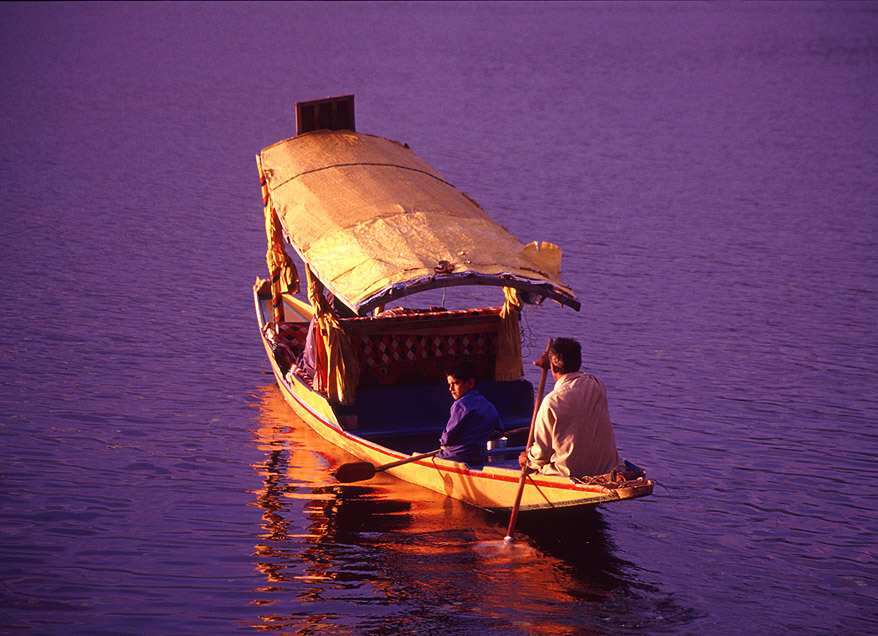
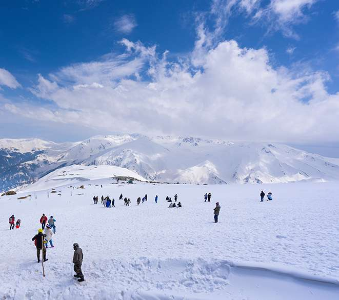
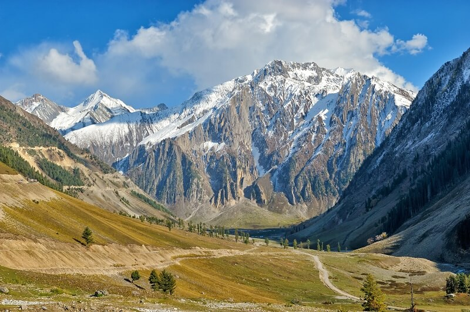
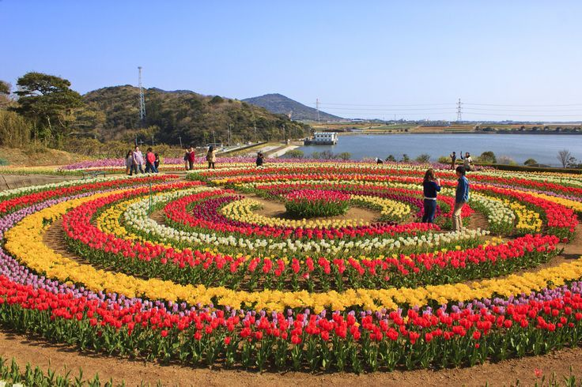
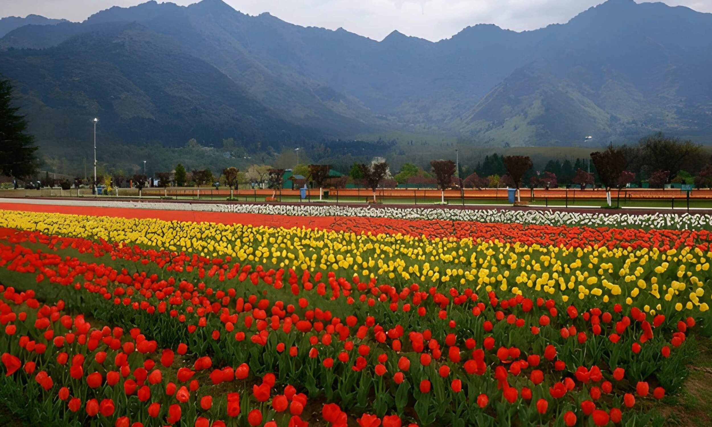
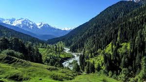

Easy · All ages
Shikara Ride on Dal Lake
Be paddled across glassy water at sunrise, past floating vegetable gardens and vendors selling flowers and Kashmiri tea from their boats.
Whether you crave adrenaline or stillness, the Kashmir Valley delivers. Here are the experiences travellers love most.

Be paddled across glassy water at sunrise, past floating vegetable gardens and vendors selling flowers and Kashmiri tea from their boats.

Take the Gulmarg Gondola to 3,980m and ski some of the highest, lightest powder on the planet — or simply soak in the views.

The "Meadow of Gold" is the gateway to alpine lakes and glaciers. Hike to Thajiwas Glacier or ride a pony through wildflower meadows.

Wander Nishat Bagh, Shalimar Bagh and Chashme Shahi — terraced gardens of fountains, roses and ancient chinar trees.

Asia's largest tulip garden bursts into more than a million blooms each spring, with Dal Lake shimmering in the background.

Sleep in a hand-carved cedar houseboat, wake to mist over the water and enjoy breakfast delivered to your deck by shikara.

Just over two hours from the city, Pahalgam is a postcard of pine forests, grazing horses and the rushing Lidder River. It is a favourite for gentle riverside walks, white-water rafting and golf with a mountain backdrop.
It is also the starting point for several famous Himalayan treks and pilgrimages.
How to Get ThereSend us your travel dates and interests and we will suggest the perfect mix of adventure and calm.
Ask a Local